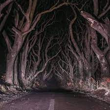

al ir por este camino ardilla escucho unos gritos desesperados que provenian de un bosque tenebroso
Al seguir aquellos lamentos y llamados de auxilio encontro a uno de sus amigos el cual estuba a punto de caer por un acantilado
ardilla tenia poco tiempo solo tenia dos opciones tratar de ayudar a su amigo con una rama o tratar de conseguir ayuda con el perro de la granja